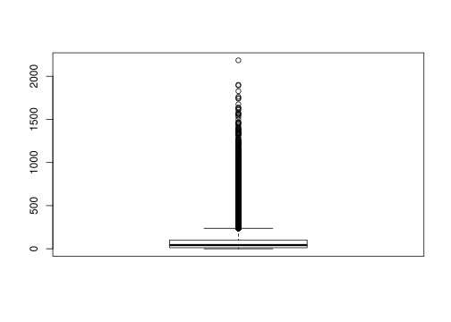

2 ATAC-Seq Data Analysis
2.1 Methods
In this tutorial we will explore methods for measuring the central value:
Methods for measuring the variance or dispersion of the data:
Methods for data exploration and visualization:
Methods for genomic count data normalization and differential peak calling:
Methods for gene set and pathway enrichment and visualizing differential peak calling results:
2.2 R libraries
We need a couple of libraries for the exercises. Let’s load them all upfront:
library(ggplot2)
library(reshape2)
library(pander)
library(Hmisc)
library(pastecs)
library(DESeq2)
library(ChIPseeker)
library(TxDb.Hsapiens.UCSC.hg19.knownGene)
library(clusterProfiler)
library(org.Hs.eg.db)
library(ReactomePA)
library(pheatmap)2.3 Load the ATAC-Seq count matrix
Let’s load the count matrix and the sample information with the blood type and donor.
df = read.table("atac.data.gz", header=T)
si = read.table("blood.samples", header=F)
colnames(si) = c("sample", "celltype", "donor")
rownames(si) = si$sample
si$donor = factor(si$donor)
pander(dim(df), "Data dimensions")590650 and 14
pander(head(df))| Chr | Start | End | Bcell_13A | CD4_9A | CD4_9B | CD8_10B |
|---|---|---|---|---|---|---|
| chr1 | 10025 | 10525 | 0 | 0 | 2 | 0 |
| chr1 | 13252 | 13752 | 0 | 4 | 0 | 2 |
| chr1 | 16019 | 16519 | 1 | 0 | 2 | 0 |
| chr1 | 96376 | 96876 | 0 | 0 | 0 | 0 |
| chr1 | 115440 | 115940 | 0 | 2 | 0 | 0 |
| chr1 | 235393 | 235893 | 2 | 4 | 2 | 0 |
| Erythroblast_15A | Erythroblast_15B | Erythroblast_15C | NK_11A | Nkcell_11B |
|---|---|---|---|---|
| 0 | 0 | 0 | 3 | 2 |
| 0 | 0 | 0 | 2 | 0 |
| 2 | 0 | 0 | 2 | 2 |
| 0 | 0 | 0 | 0 | 0 |
| 4 | 2 | 0 | 0 | 0 |
| 0 | 0 | 0 | 2 | 4 |
| Bcell_13B | CD8_10A |
|---|---|
| 0 | 0 |
| 0 | 0 |
| 0 | 2 |
| 0 | 0 |
| 0 | 0 |
| 0 | 0 |
pander(head(si))| sample | celltype | donor | |
|---|---|---|---|
| Bcell_13A | Bcell_13A | Bcell | 5483 |
| Bcell_13B | Bcell_13B | Bcell | 5483 |
| CD4_9A | CD4_9A | CD4Tcell | 5483 |
| CD4_9B | CD4_9B | CD4Tcell | 5483 |
| CD8_10A | CD8_10A | CD8Tcell | 5483 |
| CD8_10B | CD8_10B | CD8Tcell | 5483 |
print(summary(si))## sample celltype donor
## Bcell_13A:1 Bcell :2 5483:11
## Bcell_13B:1 CD4Tcell:2
## CD4_9A :1 CD8Tcell:2
## CD4_9B :1 Ery :3
## CD8_10A :1 NKcell :2
## CD8_10B :1
## (Other) :52.4 Removing missing peaks
The original count matrix had many more samples and thus, we have now a number of peaks in our matrix that are actually not present anymore. Let’s remove all the rows where not a single sample has more than 50 reads.
df = df[apply(df[,4:ncol(df)], 1, max) > 50,]
pander(dim(df), "Data dimensions")57891 and 14
cm = df[,4:ncol(df)]
pander(quantile(rowSums(cm)))| 0% | 25% | 50% | 75% | 100% |
|---|---|---|---|---|
| 71 | 260 | 444 | 944 | 16021 |
pander(quantile(rowMeans(cm)))| 0% | 25% | 50% | 75% | 100% |
|---|---|---|---|---|
| 6.455 | 23.64 | 40.36 | 85.82 | 1456 |
pander(quantile(apply(cm, 1, max)))| 0% | 25% | 50% | 75% | 100% |
|---|---|---|---|---|
| 51 | 71 | 111 | 209 | 2471 |
2.5 Data Exploration
With the cleaned data, we can of course now compute simple statistics for each sample like the mean read count and standard deviation of counts across peaks. Box plots are useful for summarizing the distribution of read counts.
print(mean(df$NK_11A))## [1] 89.05225print(sd(df$NK_11A))## [1] 138.2255sim = rnorm(1000, mean=100, sd=10)
boxplot(sim)hist(sim)pander(quantile(sim))| 0% | 25% | 50% | 75% | 100% |
|---|---|---|---|---|
| 68.79 | 92.95 | 99.63 | 106.3 | 134.2 |
boxplot(df$NK_11A)
hist(df$NK_11A)
pander(quantile(df$NK_11A))| 0% | 25% | 50% | 75% | 100% |
|---|---|---|---|---|
| 0 | 12 | 43 | 102 | 2184 |
A common technique for labelling outliers uses the 25% and 75% quantiles.
pw = df$NK_11A
uq = quantile(pw, 0.75)
print(mean(pw > 1.5 * uq))## [1] 0.1635487iqr = IQR(pw)
print(mean(pw > 3 * iqr))## [1] 0.07711043We obviously have a very skewed distribution with a long tail. This is very common in Genomics and the standard approach to account for such a skewed distribution is some kind of log-transformation of the count data.
pw = log(df$NK_11A + 1)
boxplot(pw)hist(pw)The other major problem in genomic count data sets is that they often show heteroscedasticity which means in our case that different peaks show different levels of variabilities in the number of reads. This is a major problem for differential peak calling.
rowsummary = data.frame(rowmeans = apply(df[, 4:ncol(df)], 1, mean), rowsds = apply(df[, 4:ncol(df)], 1, sd))
ggplot(data=rowsummary, aes(x=rowmeans, y=rowsds)) + geom_point() + xlab("Peak means") + ylab("Peak SDs")
2.6 Data normalization
Extensions of the simple log-transformation such as rlog or the variance stabilizing transformation have been developed and are often applied to count data sets. DESeq2 also provides a method to compute normalized counts that account for library size and variance-mean dependencies.
counts = df[,4:ncol(df)]
dds = DESeqDataSetFromMatrix(countData = counts[,order(colnames(counts))], colData = si, design = ~ celltype)
dds = DESeq(dds)
cm = data.frame(counts(dds, normalized=TRUE))
rownames(cm) = paste0(df$Chr, '_', df$Start, '_', df$End)2.7 Data visualization
Let’s explore the normalized counts.
lf = melt(cm, id.vars=c())
pander(head(lf))| variable | value |
|---|---|
| Bcell_13A | 120.3 |
| Bcell_13A | 28.59 |
| Bcell_13A | 36.76 |
| Bcell_13A | 36.31 |
| Bcell_13A | 24.51 |
| Bcell_13A | 41.3 |
ggplot(data=lf, aes(x=variable, y=value)) + geom_boxplot(aes(group=variable)) + xlab("Sample") + ylab("Normalized Count") + coord_flip()
ggplot(data=lf, aes(x=value)) + geom_freqpoly(aes(group=variable, color=variable), bins=30) + xlab("Sample") + ylab("Normalized Count")
libsize = data.frame(x=sizeFactors(dds), y=colSums(assay(dds)))
ggplot(data=libsize, aes(x=x, y=y)) + geom_point() + geom_smooth(method="lm") + xlab("Estimated size factor") + ylab("Library size")
2.8 Principal component analysis (PCA)
Let’s do a PCA on the normalized counts and project the cell-type information onto the PCA plot.
pca = prcomp(t(cm))
print(summary(pca))## Importance of components:
## PC1 PC2 PC3 PC4 PC5
## Standard deviation 7401.6259 4460.2806 3302.6565 2.011e+03 1.698e+03
## Proportion of Variance 0.5654 0.2053 0.1126 4.175e-02 2.977e-02
## Cumulative Proportion 0.5654 0.7708 0.8833 9.251e-01 9.549e-01
## PC6 PC7 PC8 PC9 PC10
## Standard deviation 1.602e+03 837.51387 638.98215 610.83234 567.93309
## Proportion of Variance 2.649e-02 0.00724 0.00421 0.00385 0.00333
## Cumulative Proportion 9.814e-01 0.98861 0.99282 0.99667 1.00000
## PC11
## Standard deviation 2.079e-11
## Proportion of Variance 0.000e+00
## Cumulative Proportion 1.000e+00pcaData = as.data.frame(pca$x)
pcaData$sample=rownames(pcaData)
pcaData=merge(pcaData, si)
percentVar = round(100 * (pca$sdev^2 / sum( pca$sdev^2 ) ))
p=ggplot(data=pcaData, aes(x = PC1, y = PC2, color=celltype)) + geom_point(size=3)
p=p+xlab(paste0("PC1: ", percentVar[1], "% variance"))
p=p+ylab(paste0("PC2: ", percentVar[2], "% variance"))
print(p)q=ggplot(data=pcaData, aes(x = PC3, y = PC4, color=celltype)) + geom_point(size=3)
q=q+xlab(paste0("PC3: ", percentVar[3], "% variance"))
q=q+ylab(paste0("PC4: ", percentVar[4], "% variance"))
print(q)
We can also check the proportion of variance explained by each PC.
varexp = data.frame(x=1:length(percentVar), y=percentVar)
varexp$x = factor(varexp$x)
ggplot(data=varexp, aes(x=x, y=y)) + geom_bar(stat="identity") + xlab("Principal Component") + ylab("Proportion of variation (%)")
Lastly we can inspect the loadings for each PC. That is we can investigate which peaks contribute most to the separation of the individual cell types.
loadings = abs(pca$rotation)
contribution = as.data.frame(sweep(loadings, 2, colSums(loadings), "/"))
contribution = contribution[with(contribution, order(-PC1)),]
pander(head(contribution))| PC1 | PC2 | PC3 | PC4 | |
|---|---|---|---|---|
| chr12_92987578_92988078 | 0.0004424 | 0.0001124 | 1.766e-05 | 7.004e-05 |
| chr1_224691015_224691515 | 0.0003718 | 0.0001519 | 3.07e-05 | 0.0002056 |
| chr8_38795902_38796402 | 0.0003584 | 0.0003164 | 0.0001248 | 5.385e-05 |
| chr12_92270808_92271308 | 0.0003584 | 0.0002103 | 5.986e-05 | 9.303e-06 |
| chr12_51295467_51295967 | 0.0003429 | 0.0001555 | 8.909e-06 | 9.567e-06 |
| chr15_74902825_74903325 | 0.0003399 | 0.0001579 | 9.641e-06 | 3.776e-06 |
| PC5 | PC6 | PC7 | PC8 | |
|---|---|---|---|---|
| chr12_92987578_92988078 | 1.955e-05 | 5.95e-05 | 4.679e-05 | 0.0001663 |
| chr1_224691015_224691515 | 6.718e-05 | 0.0001275 | 1.757e-05 | 2.673e-05 |
| chr8_38795902_38796402 | 0.0001721 | 6.097e-05 | 6.327e-05 | 0.000128 |
| chr12_92270808_92271308 | 3.164e-05 | 4.929e-05 | 0.0001448 | 0.0001997 |
| chr12_51295467_51295967 | 6.043e-06 | 0.0001456 | 8.594e-07 | 1.615e-05 |
| chr15_74902825_74903325 | 2.996e-05 | 0.0003589 | 3.861e-05 | 7.074e-06 |
| PC9 | PC10 | PC11 | |
|---|---|---|---|
| chr12_92987578_92988078 | 0.0002022 | 5.283e-06 | 0.0001728 |
| chr1_224691015_224691515 | 6.669e-06 | 3.329e-06 | 0.0001102 |
| chr8_38795902_38796402 | 1.797e-05 | 0.0001382 | 4.786e-05 |
| chr12_92270808_92271308 | 7.393e-05 | 6.688e-05 | 0.0001987 |
| chr12_51295467_51295967 | 1.024e-05 | 4.807e-07 | 3.969e-05 |
| chr15_74902825_74903325 | 4.397e-06 | 4.686e-06 | 0.0001824 |
2.9 Annotate genomic context
Let’s annotate the genomic context of each peak such as nearby genes a given peak may regulate.
gr = makeGRangesFromDataFrame(df, keep.extra.columns=T)
peakAnno = annotatePeak(gr, tssRegion=c(-1000, 1000), TxDb=TxDb.Hsapiens.UCSC.hg19.knownGene, annoDb="org.Hs.eg.db")## >> preparing features information... 2019-05-05 02:13:04 PM
## >> identifying nearest features... 2019-05-05 02:13:04 PM
## >> calculating distance from peak to TSS... 2019-05-05 02:13:05 PM
## >> assigning genomic annotation... 2019-05-05 02:13:05 PM
## >> adding gene annotation... 2019-05-05 02:13:16 PM
## >> assigning chromosome lengths 2019-05-05 02:13:17 PM
## >> done... 2019-05-05 02:13:17 PMThe genomic context of all peaks can be ploted using:
plotAnnoPie(peakAnno)Let’s have a look at the 500 peaks with the highest loading for PC1. Looking at the PCA plot PC1 seems to separate Erythroid cells from the others.
dfPA = as.data.frame(peakAnno)
rownames(dfPA) = paste0(dfPA$seqnames, '_', dfPA$start, '_', dfPA$end)
selpeaks = dfPA[rownames(head(contribution, 500)),]
pathway1 = enrichPathway(selpeaks[abs(selpeaks$distance) < 5000,]$geneId)
pander(head(pathway1))| ID | Description | GeneRatio | |
|---|---|---|---|
| R-HSA-6798695 | R-HSA-6798695 | Neutrophil degranulation | 16/117 |
| R-HSA-189451 | R-HSA-189451 | Heme biosynthesis | 3/117 |
| BgRatio | pvalue | p.adjust | qvalue | |
|---|---|---|---|---|
| R-HSA-6798695 | 480/10619 | 6.996e-05 | 0.03267 | 0.03267 |
| R-HSA-189451 | 11/10619 | 0.0002017 | 0.04709 | 0.04709 |
| geneID | |
|---|---|
| R-HSA-6798695 | 210/8694/10383/847/5553/54472/23197/3043/3071/5870/272/353189/8621/2992/4033/51646 |
| R-HSA-189451 | 210/3145/2235 |
| Count | |
|---|---|
| R-HSA-6798695 | 16 |
| R-HSA-189451 | 3 |
dotplot(pathway1)## wrong orderBy parameter; set to default `orderBy = "x"`
Heme metabolism is important during erythropoiesis and the neutrophil degranulation pathway is important for cells of the immune system. Hence, it makes sense that these peaks separate the Erythroid cells from the white blood cells.
2.10 Differential peak calling
We can also identify differential peaks between two cell types using DESeq2.
res = results(dds, lfcThreshold=1, contrast=c("celltype", "Bcell", "Ery"))
print(mcols(res, use.names=T))## DataFrame with 6 rows and 2 columns
## type description
## <character> <character>
## baseMean intermediate mean of normalized counts for all samples
## log2FoldChange results log2 fold change (MLE): celltype Bcell vs Ery
## lfcSE results standard error: celltype Bcell vs Ery
## stat results Wald statistic: celltype Bcell vs Ery
## pvalue results Wald test p-value: celltype Bcell vs Ery
## padj results BH adjusted p-valuesprint(summary(res))##
## out of 57891 with nonzero total read count
## adjusted p-value < 0.1
## LFC > 1.00 (up) : 14782, 26%
## LFC < -1.00 (down) : 2132, 3.7%
## outliers [1] : 0, 0%
## low counts [2] : 0, 0%
## (mean count < 3)
## [1] see 'cooksCutoff' argument of ?results
## [2] see 'independentFiltering' argument of ?results
##
## NULLThe histogram of p-values is
hist(res$pvalue, breaks=0:20/20, col="grey50", border="white", xlim=c(0,1), main="Histogram of p-values", xlab="p-value")
The log-fold changes can be visualized using
plotMA(res, ylim = c(-5, 5))
Let’s plot the significant results in a heatmap:
print(sum(res$padj < 0.01 & abs(res$log2FoldChange) > 1))## [1] 9105mat = cm[which(res$padj < 0.01 & abs(res$log2FoldChange) > 1),]
mat = mat - rowMeans(mat)
anno = as.data.frame(colData(dds)[, c("sample", "celltype")])
rownames(mat) = NULL
pheatmap(mat, annotation_col = anno, scale="row")
For the up- and down-regulated peaks we can again perform pathway enrichment. Please note that up-regulated peaks are higher in B cells whereas down-regulated peaks are higher in Erythroid cells given our contrast of B-cells vs. Erythroid cells.
selpeaks = dfPA[rownames(cm[which(res$padj < 0.1 & res$log2FoldChange>0),]),]
pathwayUp = enrichPathway(selpeaks[abs(selpeaks$distance) < 5000,]$geneId)
pander(head(pathwayUp))| ID | Description | GeneRatio | |
|---|---|---|---|
| R-HSA-194840 | R-HSA-194840 | Rho GTPase cycle | 59/1664 |
| R-HSA-983695 | R-HSA-983695 | Antigen activates B Cell Receptor (BCR) leading to generation of second messengers | 22/1664 |
| R-HSA-2029480 | R-HSA-2029480 | Fcgamma receptor (FCGR) dependent phagocytosis | 39/1664 |
| R-HSA-4420097 | R-HSA-4420097 | VEGFA-VEGFR2 Pathway | 41/1664 |
| R-HSA-449147 | R-HSA-449147 | Signaling by Interleukins | 122/1664 |
| R-HSA-9006934 | R-HSA-9006934 | Signaling by Receptor Tyrosine Kinases | 120/1664 |
| BgRatio | pvalue | p.adjust | qvalue | |
|---|---|---|---|---|
| R-HSA-194840 | 138/10619 | 2.048e-14 | 2.737e-11 | 2.367e-11 |
| R-HSA-983695 | 32/10619 | 2.261e-11 | 1.51e-08 | 1.306e-08 |
| R-HSA-2029480 | 86/10619 | 6.262e-11 | 2.789e-08 | 2.413e-08 |
| R-HSA-4420097 | 99/10619 | 6.401e-10 | 2.138e-07 | 1.85e-07 |
| R-HSA-449147 | 463/10619 | 1.123e-09 | 3.001e-07 | 2.596e-07 |
| R-HSA-9006934 | 458/10619 | 2.24e-09 | 4.698e-07 | 4.065e-07 |
| geneID | |
|---|---|
| R-HSA-194840 | 55160/998/10451/389/9181/257106/2665/94134/9886/391/143872/57569/397/121512/54509/90627/8874/23263/394/11214/29/201176/396/23526/7409/23370/4650/51291/64857/9138/388/6654/23433/9938/55843/57580/613/5880/9901/50650/57514/8997/26084/116984/399/83478/10144/79658/7204/23092/221472/117289/5879/23221/84904/89846/7410/395/393 |
| R-HSA-983695 | 5293/29760/118788/6786/5777/3709/801/5336/974/7409/933/973/6654/3708/4690/27071/5295/2534/80228/640/4067/6850 |
| R-HSA-2029480 | 998/10163/2268/10451/3709/3071/122618/4644/5336/4641/71/7525/7409/4650/5581/10097/10096/7456/10109/3055/63916/5594/3708/5580/4690/5290/5295/26999/2534/60/5879/9844/3984/10095/4067/5747/6850/7410/7454 |
| R-HSA-4420097 | 5590/998/10163/5567/10451/117145/9047/4688/9261/3845/3709/3071/5829/801/5579/1535/71/6093/7409/208/8440/3685/63916/4689/3708/5580/4690/5290/253260/5295/26999/2534/60/5879/9844/857/2185/5747/79109/7410/1536 |
| R-HSA-449147 | 5293/998/163702/6195/5724/3932/3725/1901/1435/3570/5451/356/9261/3586/29949/7431/6935/3688/3185/240/29760/9049/9846/3587/7132/5777/51561/11213/1848/2322/3146/2308/3936/4792/57161/2353/302/4088/3603/4205/3566/50615/246778/3684/3687/3965/6352/6348/6351/5608/9021/7525/5771/596/7409/2208/3383/9466/3718/3594/2323/5443/6654/57162/3557/26469/6775/2335/3667/3055/351/6647/3588/3689/6285/23765/5594/4282/5008/3162/3568/729230/1234/941/942/3592/5290/604/5602/4790/3558/2247/3600/3575/5295/4208/84868/23291/8878/3662/1026/5292/6885/2309/2534/53832/6196/7291/3569/5898/5478/2185/1846/4067/3574/4609/4507/6850/2889/6197/4478/3561 |
| R-HSA-9006934 | 5590/998/6195/10163/3932/5567/10451/117145/9047/26052/3915/4688/127124/9261/3688/3185/143282/10312/9846/80310/5777/5800/3845/3709/3071/1848/3479/10019/5829/2254/2322/8874/801/161742/6692/5607/1445/4205/5579/57610/1535/84951/3675/71/7525/5771/6093/3909/7409/208/2323/29924/6654/5581/200734/8440/26469/10254/2591/3685/8828/2335/3667/1286/1285/23767/83737/63916/1299/5753/6285/5594/135/4689/9402/3708/5580/26018/4690/5290/2247/2549/253260/55914/5295/4208/2241/9542/1729/5159/26999/2534/5796/2099/6196/60/5879/9844/5898/64759/10603/857/673/26281/2185/1846/2260/4067/55824/54845/5440/5747/5774/9550/79109/2889/5900/7410/6197/1536 |
| Count | |
|---|---|
| R-HSA-194840 | 59 |
| R-HSA-983695 | 22 |
| R-HSA-2029480 | 39 |
| R-HSA-4420097 | 41 |
| R-HSA-449147 | 122 |
| R-HSA-9006934 | 120 |
selpeaks = dfPA[rownames(cm[which(res$padj < 0.1 & res$log2FoldChange<0),]),]
pathwayDown = enrichPathway(selpeaks[abs(selpeaks$distance) < 5000,]$geneId)
pander(head(pathwayDown))| ID | Description | GeneRatio | BgRatio | |
|---|---|---|---|---|
| R-HSA-189451 | R-HSA-189451 | Heme biosynthesis | 5/437 | 11/10619 |
| pvalue | p.adjust | qvalue | geneID | |
|---|---|---|---|---|
| R-HSA-189451 | 4.339e-05 | 0.04538 | 0.04476 | 7389/7390/3145/2235/210 |
| Count | |
|---|---|
| R-HSA-189451 | 5 |
There are many other methods for functional enrichments such as GREAT or DAVID. This concludes the ATAC-Seq tutorial. I hope you enjoyed it.